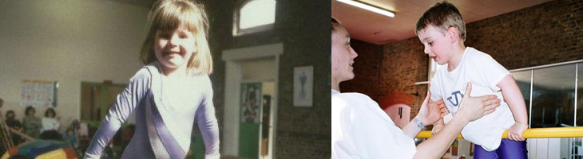
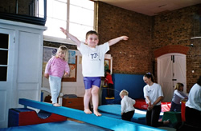
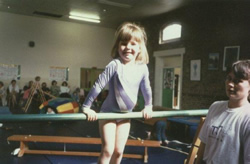
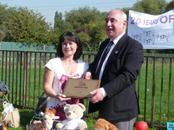

1988
TJ’s opens
The club begins with Gill and a new local gymnastics idea.
Since 1988
From a small local idea to a long-standing club for families across South West London, TJ's has always been built around warm coaching, welcoming classes and a love of movement.
TJ’s opened in September 1988. Gill Humby was leaving Roehampton University with a BSc in Sports Studies, wondering what employment she could find. Tricia and Joanna wrote an open letter to the Sports Department looking for a Gymnastics coach to run the children’s gym club they wanted to open using the hall they rented for Aerobic classes. Gill gave them a call and TJ’s was born!
For a number of years Gill ran TJ’s alone, but as the club became more popular and numbers increased it was clear more coaches and classes would be required and the timetable and staff have increased accordingly. However, today TJ’s still prides itself in creating a child friendly and welcoming atmosphere. Every child and their enjoyment of gymnastics and sport is important to us, regardless of gymnastics ability. This philosophy comes straight from Gill’s own childhood experience. She loved gymnastics but was not particularly good at it! Back flipping on the floor was a little scary and as for the beam, well, that was just silly!! But upside down was a good feeling!

In January 2023 TJ’s moved from the hall in Wimbledon which we had hired for 34 years to Raynes Park Sports Pavilion, SW20. We are so excited to have a new home!
1988
The club begins with Gill and a new local gymnastics idea.
2023
TJ’s starts its next chapter at Raynes Park Sports Pavilion.
Gill married Chris in October 1997 and they have two sons Max and Samuel. In 2005 they moved from Morden to Elstead in Surrey. Both Max and Samuel attended TJ’s so Gill has been both coach and parent in the classes.
Gill is very proud of TJ’s. It is small, friendly and caring club and one of her greatest achievements has been to see some of the first children she taught grow from childhood to adulthood continuing their involvement and commitment to TJ’s. These include Natalie Garlick, Kate Harding, Emily Martin, Phillipa Barker Rachel and Hannah Reiss, Jade Shaw and Joe Kelly!


1988
Gill answers a call for a gymnastics coach and the club begins.
Growth years
As numbers rise, the timetable expands while the welcoming atmosphere stays the same.
1997 / 2005
Gill’s own family becomes part of the TJ’s story too, deepening the club’s family roots.
2023
TJ’s moves to Raynes Park Sports Pavilion and starts its next chapter there.


